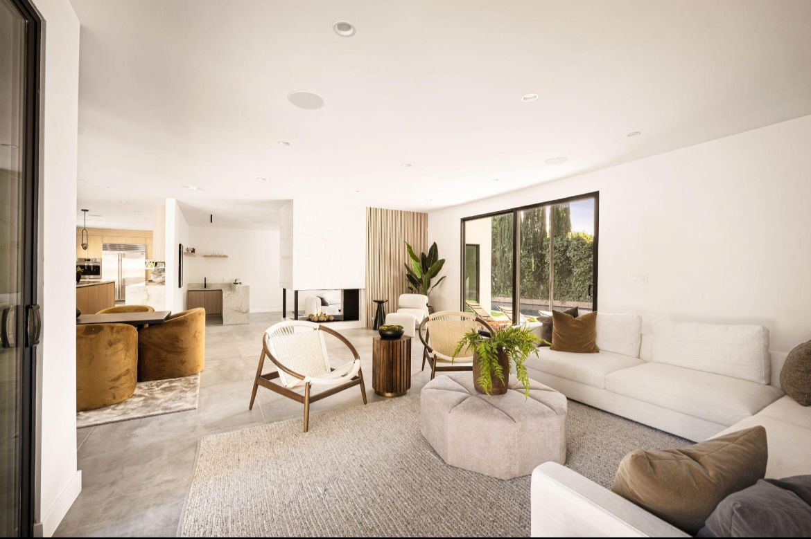

Our process combines creative vision, technical precision, and structured delivery to produce refined interior environments with lasting value.
cozy cabin & co was established with a clear mission to bridge creativity and structure in the delivery of refined interior environments.
We work with private clients, developers, and hospitality investors who require more than aesthetics. Our process integrates design intelligence, technical detailing, procurement coordination, and execution oversight to ensure seamless delivery.
Every project is approached as an asset, carefully curated, efficiently managed, and executed to meet elevated standards of quality and design.
cozy cabin & co is a Lagos headquartered interior design firm specializing in residential, hospitality, and commercial environments. We are committed to delivering interiors that meet international quality standards while reflecting the evolving sophistication of Nigerian design.
Our work is rooted in precision, structure, and refined aesthetics. Every project is approached strategically, from spatial planning to final installation, to ensure functionality, durability, and timeless appeal.
We serve a diverse client base ranging from private homeowners to hospitality developers and corporate brands. Regardless of project size or budget range, our commitment to excellence remains constant.

The vision behind cozy cabin & co is rooted in creating interiors that feel elegant, resolved, and purposeful. Every project is guided by a commitment to thoughtful design, visual harmony, and quality execution.
The studio’s leadership reflects a design philosophy centered on intentional living, refined presentation, and spaces that feel both luxurious and functional.
From residences to hospitality and commercial interiors, the brand direction remains consistent: creating environments that communicate warmth, structure, comfort, and lasting value.
To become the foremost luxury interior design and bespoke furniture studio in Nigeria, renowned for transforming residential and commercial spaces into exquisite, functional works of art that reflect the unique tastes and lifestyles of our clients.
Our mission is to deliver exceptional interior design and custom made furniture solutions that blend creativity, craftsmanship, and quality. We are committed to understanding our clients’ needs and visions, providing personalized services that enhance their living and working environments.
Beyond design, cozy cabin & co curates and produces made to order furniture crafted to complement luxury interiors. Each piece is designed with attention to detail, material integrity, and long term value.
Thoughtful concepts shaped by spatial planning, material direction, and refined detailing.
Structured coordination that ensures quality control, efficient timelines, and seamless delivery.
Made to order furniture pieces crafted to complement luxury interiors with precision and value.
We do not simply furnish spaces. We build environments that elevate experience, performance, and investment value.
“The final result felt refined, warm, and beautifully thought through. The space was elevated in a way that felt both luxurious and practical.”
Dr Seth Akemu“What stood out most was the attention to detail and how clearly the design direction was carried through every part of the project.”
Mrs Onomen Aroture“The process felt organized, intentional, and highly professional. The finished space had real presence and comfort.”
Hospitality Project, LagosFrom private residences to hospitality and commercial environments, we deliver thoughtful interiors shaped by creativity, structure, and intentional execution.
Book a Consultation